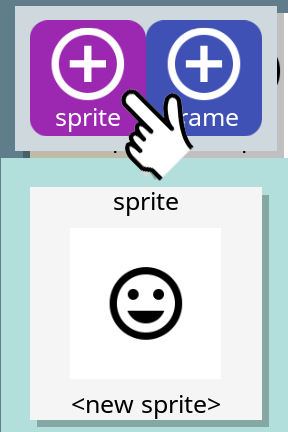
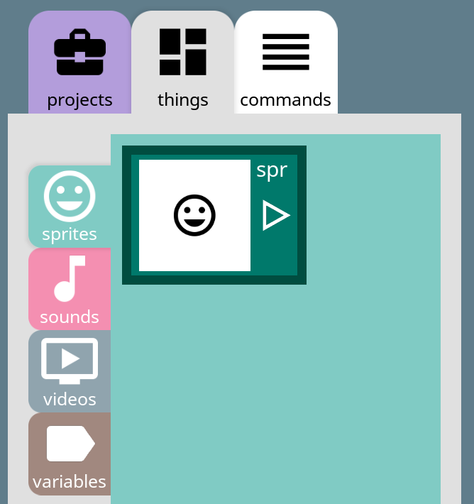

Help
Welcome to Codey Codey, the programming tool. This is the main help index page. Press links (that look like this Help Index) below, to jump to one of the help sections.
Sections
Things to know
Codey Codey is a full-fledged drag-n-drop programming tool, designed for mobile tablets such as the iPad.
Programming tools are complex beasts, and require many features. This presents a challenge for a touch screen interface.
Example screen
To simplify the view, the screen is divided into two sides:
Most things you see on the screen can be pressed, held or dragged.
Tabs
There are many tabs. Tabs can be pressed to switch the view.
If you press and hold a tab, it will show a help tip about what the tab does.
Dragging, pop-up menus and scrolling
If you press and immediately release sprites, library items or commands nothing happens.
However, if you press and hold for a moment, they highlight and can be dragged. Why the delay you say? It's a trade-off between accidently dragging something, and scrolling through the items in the panel - this is more obvious on the tab.
If you press and hold for longer, a popup menu appears with actions you can apply to the item you're pressing.
Toolbar
At the top-right of the screen is the toolbar for switching between this view, the and the .
The 'more' button provides settings for the current view. The following are for this view:
- naming - controls whether new items, such as projects and sprites, are automatically named, e.g. Project 1. Or you need to enter a name for the item when you create it. The name of a item can always be renamed at a later time.
- libraries - controls whether you want to see library projects (see Libraries). Library projects contain sprites that can be included into your project from the library panel.
- cmds (size) - specifies the size (shown in parentheses) of commands to help visibility on different devices.
- help (size) - specifies the size (shown in parentheses) of the help text of the help tab.
- title - shows the initial title screen again. For those that really love it! :-)
Projects
The project screen is visible when the projects tab (top-left) is selected.
The darker purple left panel shows open projects.
The lighter purple library tab panel on the right shows projects and project folders.
Library projects
Select the project library tab, and you'll be presented with a <new project> box, and several folders:
- my projects - that is where your projects will be.
- examples - the list of example projects that you'll see in the command help.
- library - if the library setting is on, you'll see library projects folder.
Press and hold on <new project>, until the popup menu appears, then select add.

Depending on whether naming is on or off, you'll either be asked for a new project name, or it will be named automatically.

If you press and hold on a library project, the following popup menu will appear:
- open or close - if the project is open, then close is available, otherwise open.
- info - provides infomation about the project. Note: This pops up as a help panel, just press in the bread crumb trail to go back.
- rename - rename the project. Note: you can have projects with the same name, so remember what they are!
- duplicate - make a copy of the project. Useful if you want to experiment, or if you have a good base project you like to start from.
- delete - deletes the project, gone, nada!
Open projects
Only open projects are listed in the open projects panel. The star on the project indicates it is open.
If you press and hold on an open project (in the open projects panel), the following popup menu will appear:
- close - close the project. It will be removed from the left panel. To re-open go to the appropriate folder in the library.
- make lib - convert the project into a library project. The project will no longer be shown in the open projecnts panel (unless libraries setting is on).
- rename - same as above.
- duplicate - same as above.
- delete - same as above.
Tip: You can also drag the <new project> box, or a library project to the open projects panel to create a new project or open one respectively.

Libraries
Libraries are available for the projects tab, and all sub-tabs within the things tab.
More detail about the content of each library can be found in the associated section: Projects and Things.
A library is actually a special type of project in the libraries folder (visible from the projects library tab if the libraries switch is on - see information about the more button in Things to know).
A library project (right now) can contain sprites, sounds and videos, which a presented in the library tab for each of those things (see Things).
Codey Codey has a built-in library project with a few images and sounds. You can import additional images or sounds and videos into this library. Then they will be available to use in all of your real projects.
You can also create your own library project. Just create a project and add things to it. Then select make lib from open project menu, and the project will become a library.
In a future release of Codey Codey, a number of additional library features will be added:
- Buy and/or download projects from the community, including library projects.
- Share and/or sell projects to the community, including library projects.
- The variable library tab will show variables that have been shared with you, e.g. to exchange data between projects in community.
Things
Things (as denoted by the things tab) is where sprites, sounds, videos and variable are managed, each within their own tab of the same name.
Sprites
A sprite is the most important thing in Codey Codey. You can't write code or run anything without a sprite.
Go to the sprites sub-tab (within things) and you'll see the green sprites panel, showing sprites used in the current project.
Creating sprites
To create a sprite, go to the sprite image library tab, then either:
- Drag the <new image> box to the sprites tab panel, and drop it on the background. If there are existing sprites, make sure you don't hover the sprite over another sprite and you don't see a black box with arrows - we'll talk about this below in adding frames.
- Press and hold on the <new image> box, and the sprite popup menu will apppear. Click the sprite button (with the + icon).

- Drag a library sprite to the sprites tab panel.
Depending on whether naming is on or off, you'll either be asked for a new sprite name, or it will be named automatically.
You'll definitely have a sprite in the sprite tab panel now!

The sprite box will show the image for your sprite, the name of the sprite and an arrow.
In-fact, now that you have a sprite in your project, even with no code, you can pressed the run button to see what happens (see Runtime).
Managing sprites
If you press and hold on a sprite, the sprite popup appears:
The following buttons are available:
- edit - open the image editor to edit the image of the currently selected frame of the sprite. See Editing sprite images below.
- library - add the selected sprite to the library. This is helpful if you've edited a sprite, and want to make it available in the library for other projects.
- rename - rename the selected sprite.
- duplicate - make a copy of the sprite, and give it a new name. This is useful if you want to edit the sprite, say add an explosion.
- delete - delete the sprite from the project. It is completely gone.
Creating frames
Now you have a sprite, let's talk about frames, the second (and actually more) important thing!
On each sprite there is an arrow under the sprite name. This shows and hides the list of frames for the sprite. Try pressing it.
You'll notice when you first create a sprite, it will have one frame, which has the same image as the sprite. You many also notice that there is a thick border around the frame, that indicates the selected frame, or the frame that the sprite is showing.
Quite often when you write a game you need to able the change the image of a sprite, say from an alien to an explosion when the alien is destroyed. This is the purpose of frames.
You add all the frames you need for each sprite, then select the starting frame and use frame commands you can change the image of the sprite at runtime.
Adding an frame is similar to adding a sprite. Go to the sprite image library tab, then either:
- Drag any of the images over to the sprite tab panel, but this time, hover the image over a sprite or a frame. You will notice a black border with a little arrow, this indicates that the image will become a new frame of the sprite.
- Press and hold on a image and pressed the frame button (with the + icon). This will append the image as a new frame of the currently selected sprite.
Frame numbers indicate the order of frames when selecting a frame in a command, or using the [next frame] and [prev frame] commands.
Managing frames
If you press and hold on a frame, the frame popup appears:
The following buttons are available (and very similar to the sprite popup):
- edit - open the image editor to edit the image for the selected frame. See Editing sprite images below.
- library - add the selected sprite to the library. This is helpful if you've edited a sprite, and want to make it available in the library for other projects.
- duplicate - make a copy of the sprite, and give it a new name. This is useful if you want to edit the sprite, say add an explosion.
- delete - delete the sprite from the project. It is completely gone.
Managing images
As seen above, the image popup menu has several additional buttons as follows:
- view - open the image viewer to see the image in more details, zoom, etc. See Editing sprites below.
- rename - to rename the default name of the image in the library. This name is used to automatically name sprites.
- duplicate - to make a copy of the image, typically so you can edit it.
- delete - delete a local image from the library. Note: this deletes the image from the library project and permanently from codey codey.
Editing sprite images
The sprite image editor is quite sophisticated, providing for quite a few features.

If you press and hold on each button, a help tip will appear. However, some buttons need a bit more explanation.
Commands
Coding
Tip: When all code for all events for all sprites is complete (i.e. there are no further commands to run), the program ends. This includes events that don't fire, such as (when sprite pressed) and (when sprite released) comands.
To ensure your program keeps running, add a repeat forever loop as in this example.
Example #2
Layout
Runtime
Variables
Sounds and video
Sprite editor
Credits
Codey Codey
Copyright (c) 2019 - Paul Sagor
Made for Wade. Thanks for the inspiration and all the ideas and help with testing.
Codey Codey is completely developed in AppGameKit (tier 1).

Give it a try: AppGameKit web site